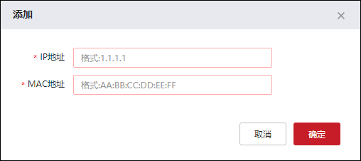
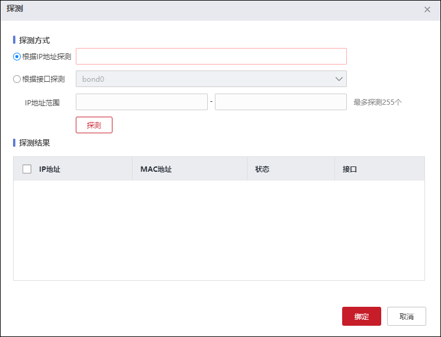
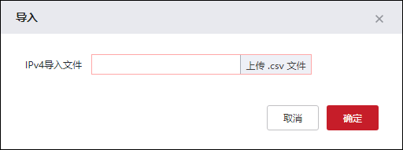
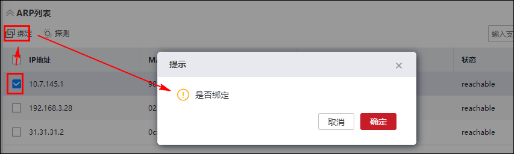

二层IP-MAC绑定技术是将主机的IP地址和网卡的硬件地址进行绑定，从而防止IP欺骗、地址伪装。该方式主要用于绑定一些重要管理员IP和特权IP：当某个IP通过防火墙访问时，防火墙要检查发出这个IP单播包的MAC地址，并与防火墙上的IP-MAC绑定规则相比较，如果相符就允许通过，否则不允许通过防火墙。此种技术特别适用于防止外部用户假冒内部地址穿过防火墙来访问内部网络的行为。
NGFW将IPv4和IPv6的IP-MAC绑定功能分开显示，操作方式类似，下面以IPv4为例介绍具体配置：
| 步骤1 | 选择 ，激活“IPv4”页签。 |
| 步骤2 | 添加IP-MAC地址绑定策略。 |
1）点击“添加”，弹出“添加”窗口，如下图所示。

在添加IP-MAC绑定时，各项参数的具体说明如下表所示。
参数 |
说明 |
|---|---|
IP地址 |
必填项，设置地址绑定关系中的IP地址。 当IP地址是目的IP地址时，主要指受保护的主机IP地址；当IP地址是源IP地址时，主要指发起连接的（可能是攻击）的主机IP地址，而且可能是虚假的IP地址。 多次配置同一IP地址到地址绑定关系中，后配置的表项不能添加。同一个MAC地址可以同多个不同的IP地址关联。 |
MAC地址 |
必填项，设置地址绑定关系中的MAC地址。 某IP地址的主机真实的MAC地址或任意指定的MAC地址。 |
2）配置完成后点击【确定】按钮。
| 步骤3 | 探测。 |
1）点击“”，弹出“探测”窗口，如下图所示。

在设置探测规则时，各项参数的具体说明如下表所示。
参数 |
说明 |
|---|---|
根据IP地址探测 |
当“探测方式”为根据IP地址探测时，在右侧的文本框中输入指定的IP地址，从而通过向指定的IP地址发送ping命令来获取该IP地址对应的MAC地址。 |
根据接口探测 |
当“探测方式”为根据接口探测时，在右侧的下拉框中选择相应的接口。 |
IP地址范围 |
当“探测方式”为根据接口探测时，设置IP探测的起始IP和结束IP。向指定探测网段发送ping命令，收集IP地址和MAC地址的映射关系，指定的探测网段必须与接口在同一网段。单次可探测的最大IP个数为254。 |
2）配置完成后点击【探测】按钮。探测结果会在“探测”窗口下方的“探测结果”界面进行显示。
3）勾选“探测结果”界面中显示的记录，点击【绑定】按钮，即可将该条记录添加到IP-MAC绑定策略中。
| 步骤4 | 批量导入。 |
1）点击“ ”，弹出“导入”窗口，如下图所示。
”，弹出“导入”窗口，如下图所示。

2）点击【上传.csv文件】按钮，弹出“打开”窗口，在管理主机中选择存有IP-MAC地址的文件，再点击【打开】按钮，完成文件的导入。
| 步骤5 | 导出。 |
点击“ ”，选择存放IP-MAC地址绑定文件的路径，将导出文件保存到管理主机中。
”，选择存放IP-MAC地址绑定文件的路径，将导出文件保存到管理主机中。
| 步骤6 | 绑定ARP表项。 |
在“ARP列表”界面中，选中一条ARP表项，点击“绑定”，即可将设备学习到的ARP表项导出到“IP-MAC绑定列表”，实现MAC地址和IP地址批量绑定。关于ARP表项的配置具体请参见 配置ARP。
